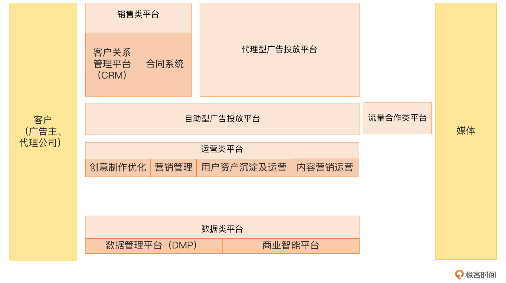
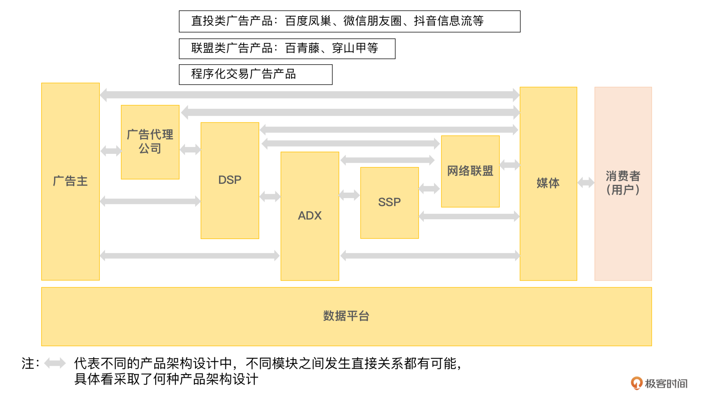
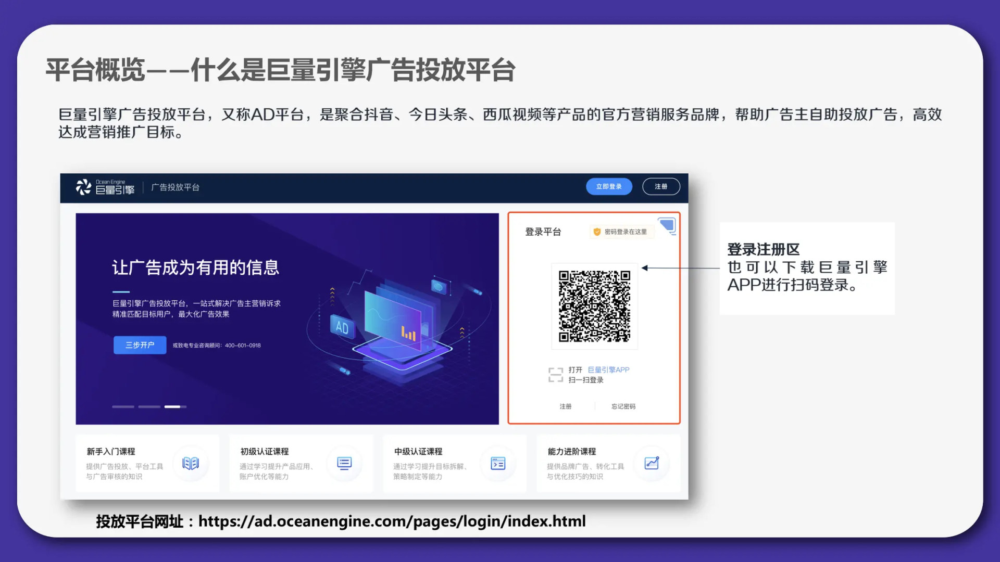
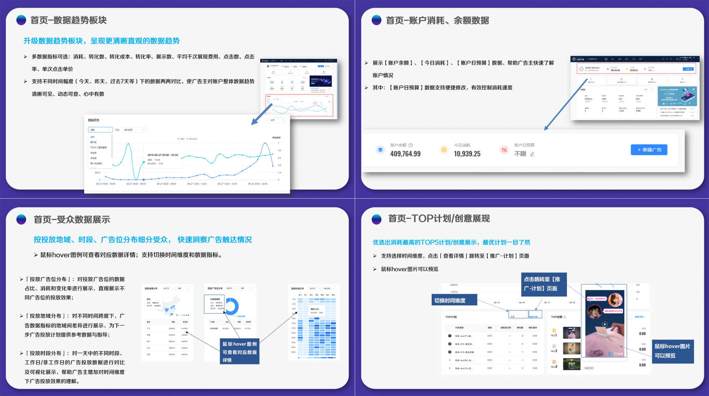
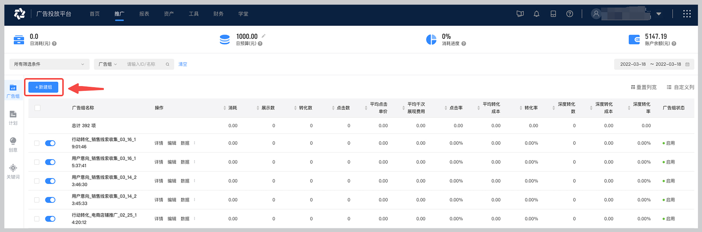
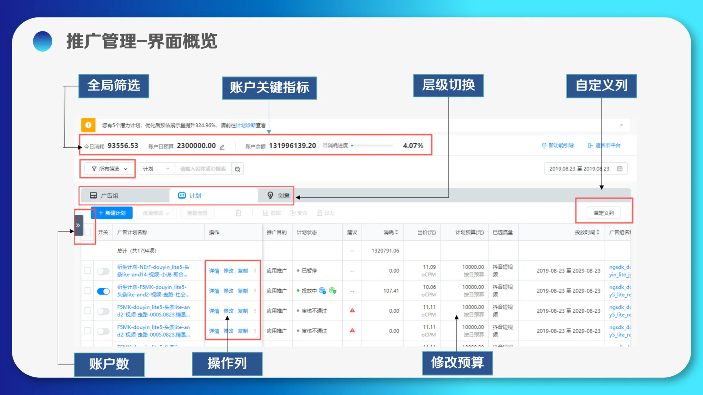
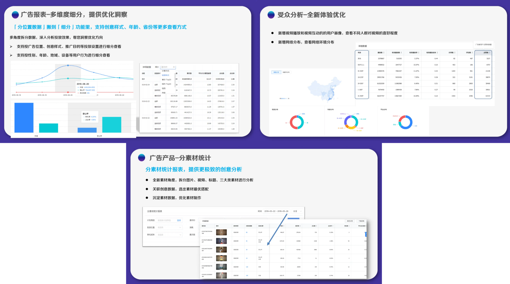
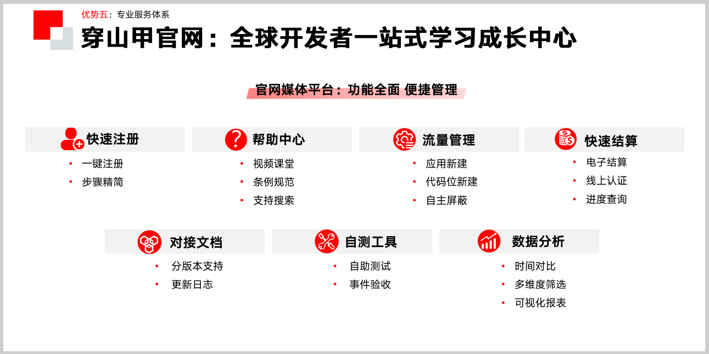
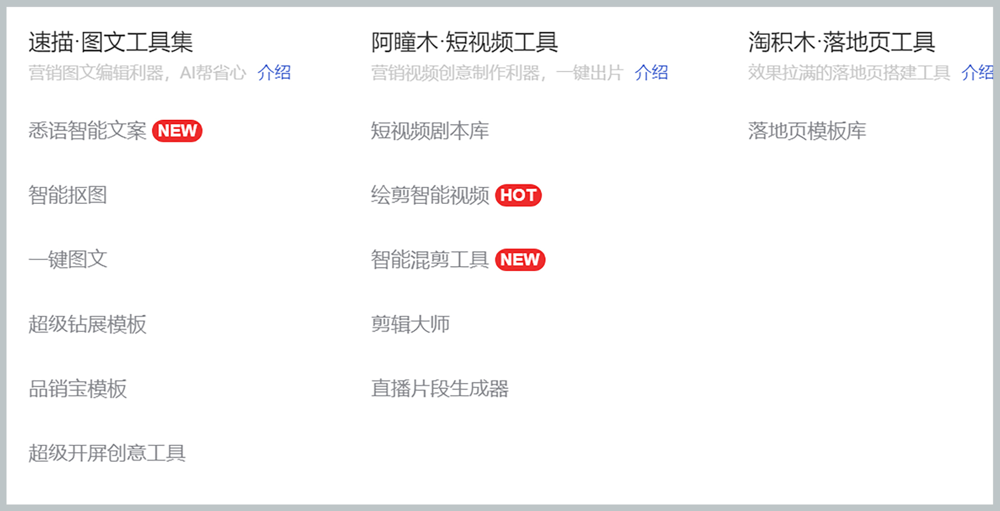

- 00 开篇词 作为一名互联网人，你为什么必须了解广告产品？.md.html
- 01 业务逻辑：广告产品的前世今生和商业模式是怎样的？.md.html
- 02 业务链条：广告主、媒体、第三方等分别如何看待广告产品？.md.html
- 03 头部玩家：从BAT到跳动的字节，广告产品有哪些变化与发展趋势？.md.html
- 04 产品体系：互联网大厂的广告产品存在哪些共性和区别？.md.html
- 05 变现模式：什么样的产品适合采用广告模式变现？.md.html
- 06 产品路线：大厂和小厂的广告产品发展路线有什么区别？.md.html
- 07 计价与效果（上）：如何制定合理的计价方式？.md.html
- 08 计价与效果（下）：如何制定合理的效果评估指标？.md.html
- 09 效果优化：如何一步步从提升曝光量深入到提升销量？.md.html
- 10 流量优化：如何兼顾广告收入和用户体验？.md.html
- 11 物料生产：如何满足广告主的创意需求？.md.html
- 12 精准定向：如何建立一个成熟的用户标签体系？.md.html
- 13 转化优化：互联网大厂如何利用算法优化广告效果？.md.html
- 14 程序化交易：程序化交易是否可以提升广告效果？.md.html
- 15 需求调研：广告产品潜在需求的调研流程是怎样的？.md.html
- 16 平台建设：如何从0到1建立一个完整的广告产品平台？.md.html
- 17 职业发展：新人入行，如何判断自己是否适合做广告产品？.md.html
- 18 团队建设：如何搭建一个高效的广告产品团队？.md.html
- 19 跨团队合作：产研团队和销售端、媒体端、市场端如何合作？.md.html
- 20 产品运营：不同发展阶段如何制定业务目标和运营策略？.md.html
- 21 广告产品彩蛋：课程答疑与推荐书目.md.html
- 结束语 你想要成为什么样的互联网广告产品人？.md.html
- 捐赠
16 平台建设：如何从0到1建立一个完整的广告产品平台？
你好，我是郭谊。
在开始今天的课程之前呢，我先给你展示一张示意图。

这是一个非常完整的广告产品平台，它包括广告投放平台（代理型和自助型）、销售类平台、运营类平台、数据类平台以及流量合作类平台五个部分。我们之前第14讲中提到过程序化交易的一系列平台，但那些对于一个头部的媒体平台来说并不完整。一个完整的广告产品平台非常复杂，承载着不同角色、不同部门的工作，并不仅仅是我们从官网上看到的那么简单。
那广告产品平台是怎么一步步发展成现在的样子的呢？我们又该如何去设计搭建这样一个平台呢？在今天的课程中，我来带你寻找答案。
在广告产品设计与开发的过程中，广告产品的平台建设是一个关键性问题。它关系到广告产品体系的完整性和可持续发展的可能性。但建设广告产品平台是一件非常复杂的事情，不是产品经理能够独立完成的，需要产品团队以及研发、运营团队合力搭建。
俗话说“熟读唐诗三百首，不会作诗也会吟。”我们只有充分了解广告产品平台，才有可能去完成相应的搭建工作。好在我们有成功的案例可以借鉴，今天我就以BAT、字节等互联网大厂为例，给你介绍一下广告产品的平台矩阵及产品路线图，教你怎样去设计、搭建一个完整的广告产品平台。
大厂的广告产品平台矩阵
在第2讲中，我曾为你呈现了广告产品最原始和最基本的业务链条。但是，经过这一段时间以来的学习，相信你已经认识到：大厂的广告产品比那个业务链条中所呈现的要复杂、丰富很多。我们先把原来的业务链条补充完整，你会发现多了许多“新角色”，这一变化主要源自互联网媒体的发展所带来的产品及行业的进化。

大厂的广告产品包括直投类广告、联盟类广告和程序化交易广告，而对应的这些产品也依托于不同的平台。在各个广告产品的架构设计中，不同模块都有直接发生关联的可能。例如，广告主可以直接向媒体采购并投放直投类广告产品，也可以通过代理公司链接DSP、ADX、SSP等一系列平台，完成广告产品的最终投放。除了广告投放平台，广告产品平台矩阵中还包括销售类平台、运营类平台、数据类平台等。
广告产品的类型众多，它们各自分工，相互合作，让广告产品的业务链条能够高效地运转起来。但实际上它们之间并不是平等的，就像人吃饱穿暖以后才会去考虑更高的追求。我们需要先搭建起最核心的平台，然后再在这个核心平台的基础上去建设其他的平台，这是我们设计时的一个基本思路。
广告产品的核心平台：广告投放平台
广告产品的平台建设中，最早发展起来的是广告投放平台，它是最核心的也是最重要的平台。所以我们在搭建广告产品平台的时候，要先从广告投放平台的搭建开始，这是我们的大本营。
现在的广告投放平台主要可以分为两种类型：
- 代理型广告投放平台：广告主或代理公司事先提供合同、上线单、物料、着陆页链接、人群标签选择等，由媒体平台的运营或者广告上线组代广告主及代理公司进行投放。一般用于CPT/CPM合约购买类广告产品。广告主或代理公司常常在广告投放之后付款，和媒体平台有一个约定的账期。
- 自助型广告投放平台：广告主或代理公司开通账号并预先充值后，进行自助设置投放及优化广告的平台。一般用于CPC实时竞价类广告产品。
因为这两类广告平台有很多类似之处，所以我以字节的巨量引擎自助型广告投放平台为例，为你介绍一下如何建设广告投放平台的主体部分。
搭建官网
自助型广告投放平台首先需要建设对外公开的官网，提供自助型广告平台的注册及登陆入口，广告主或者代理公司可以通过网页进行注册及登录。现在，自助型广告平台一般也会上线自己的App（例如巨量引擎App），但是网页版的功能还是最齐全的。搭建官网和注册流程，除了产品经理之外，还需要设计、研发、测试等团队的加入，也需要链接客户信息相关的数据库。

投放平台首页
客户注册并登录广告投放平台后，你需要首先设计并展现账号后台首页。一般来说，你需要在这个首页展现账户余额、广告消耗等广告产品投放的大盘数据，这是客户最关心的信息。
除了大盘数据，你还需要在这个界面展现客户账户的日消耗预算、曝光量、点击量、转化量、转化成本等预算以及效果的相关数据。这可以让客户快速确认目前的广告投放是否正常，是否需要进行优化操作。
你还可以在首页设置重要信息的优先展示。例如，除了日消耗预算之外，广告优化人员最容易进行优化操作的两个模块就是物料和人群定向，所以你可以在首页的相关模块设置鼠标悬浮下钻展示创意和受众的数据，让广告优化人员可以快速定位问题。

除了网页版 + App的标配，后续产品升级时，你还可以考虑为客户提供智能投放功能，让客户可以利用媒体平台的大数据在一定程度上提升营销的智能化和自动化。类似的产品可以参考阿里妈妈的万相台、腾讯广告的智能投手等。
推广管理
广告优化人员在自助型广告投放后台最重要的工作，就是进行广告投放的设置及优化。所以，广告投放后台的设计重点是要提供推广管理功能，支持广告的新建和修改。
按照层级，广告设置至少分为广告组和广告计划两个层级，一个广告组可以包括多个广告计划。你需要为广告优化人员提供广告组和广告计划的新建功能。
在广告组层级，最主要的是提供预算分配功能。建好广告组后，广告优化人员可以在组下面再建立多个广告计划。在广告计划层级，你除了提供预算分配功能外，还需要提供广告产品类型、人群定向条件、出价、转化优化等模块的菜单功能，并提供物料、着陆页链接、第三方监测链接等信息的上传功能。这样，客户就可以进行广告预算的分配，以及广告的新建、投放、优化及修改了。

除此之外，你还需要提供广告组和广告计划的展现功能，让广告优化人员除了新建广告组和广告计划，还能够通过推广管理模块轻松地看到所有的广告组及广告计划列表，并且能够通过点击详情页查看和修改操作等入口，进入操作页面。

数据报表
除了推广管理模块，广告投放后台另一个至关重要的模块就是数据报表模块了。一个完善的数据报表模块，至少需要提供以下功能：
- 支持从账户、广告组、广告计划、物料创意等各个层次的数据汇总及下钻查看；
- 支持物料创意、人群定向、广告产品类型（流量平台、广告位、计划模式等维度）、广告投放计划等维度的消耗及效果数据对比，便于广告优化人员快速找到优秀的广告计划，并对其进行预算倾斜。

在投放平台的搭建中，除了产品经理之外，还需要设计、研发、测试等团队的加入，同样也需要链接广告投放信息相关的数据库。另外，你需要设置一套完整的分角色账号体系，支持包括对外的广告主、代理公司，对内的运营、销售及销售支持、数据分析或商务分析等。每个角色下还需要提供管理员和普通操作人员等不同子角色，让管理员可以为普通操作人员进行账号开通和数据权限分配。
广告产品的销售类平台
我们刚刚提到的代理型和自助型广告投放平台，它们最大的区别，就在于前者的广告主开户及付款过程是相对独立的。因此，你还需要为代理型广告投放平台设计对应的销售类平台。最基本的销售类平台包括客户关系管理平台和合同系统两类。
为了配合代理型广告投放平台，你需要优先设计并上线的是针对广告主及代理公司的客户关系管理（Customer Relationship Management，简称CRM）平台。客户关系管理平台的主要使用者为销售。一个客户关系管理平台需要满足以下基本功能：
- 可以由销售或者销售运营人员，为广告主和代理公司上传资质，进行开户；并且，销售人员可以在里面查看客户信息。这也是一个客户关系管理平台首要满足的功能。
- 提供销售漏斗录入及查看功能，让销售人员可以录入对客户的跟进情况。例如把初次电话沟通的进度标注为5%，走完购买合同进度标注为100%等。这是客户关系管理平台在成熟期需要满足的关键功能，便于销售团队进行精细化管理。
客户在通过客户关系管理平台，建立客户资质后，接下去就要和媒体平台签订合约广告的购买合同了。因此，你需要上线的第二个重要的销售类平台就是合同系统。只有在客户关系管理平台中已经建立了资质的客户才能关联合同系统中的合同，关联客户后的合同才能进入后续审核流程。
一个合同系统需要满足以下基本功能：
- 可以由销售或者销售运营人员录入并上传合同；
- 销售领导、财务、法务以及其他审核流程里的相关角色，可以通过合同系统审核、打回或通过合同。
合同通过后，运营或者广告上线组才能在代理型广告投放平台中找到这个合同，并关联创建广告投放计划。这是因为代理型广告投放平台是针对一段时间内有固定量的消耗需求的合约广告产品。相比之下，自助型广告投放平台由客户自助开户，并且不需要针对单次投放再走合同，只要后台账户里还有预算就可以。
合同系统的主要使用者除了销售团队之外，还有财务、法务及其他审核流程中可能需要涉及的角色，如运营、产品的领导等。在销售类平台的搭建中，除了产品经理之外，还需要设计、研发、测试等团队的加入，也需要链接客户、合同等信息相关的数据库。另外，你要针对不同的角色为其展现不同的功能模块及数据信息。
广告产品的流量合作类平台
为了支持联盟类广告产品，除了广告投放平台外，你还需要为合作媒体建立针对他们的流量合作类平台。例如同属于字节的穿山甲平台。

这类平台需要为合作媒体提供以下基本功能：
- 注册及认证为合作媒体；
- 流量接入；
- 流量变现及广告效果数据报表；
- 分成结算。
和广告投放平台类似，针对大的合作媒体，我们会有单独的商务团队负责媒体拓展、谈判与合同签订。针对大量小媒体，通过这个平台为他们提供以上自助服务即可。
在流量合作类平台的搭建过程中，除了产品经理之外，还需要设计、研发、测试等团队的加入，也需要链接媒体、广告位、分成结算等信息相关的数据库。
广告产品的运营类平台
除了广告投放平台、销售类平台和联盟侧平台之外，你还需要建设广告运营类平台。因为广告效果优化不是一蹴而就的，广告优化人员的操作水平也参差不齐。为了更好地帮助广告主和代理公司操作及优化广告，随着广告产品的成长及成熟，我们需要不断推出更多的运营类平台产品。
以阿里妈妈为例，它的运营类平台包括：
- 创意制作及优化类：例如阿里妈妈创意中心的一系列产品，提供物料、着陆页制作及优化能力。这类平台的主要功能和发展历程，我在第11讲中已经做了详细的介绍，这里就不再赘述。

- 营销管理类：例如阿里妈妈客户工作台，定位是为广告主搭建高效的客户管理系统，通过连接广告投放与广告营销数据，提升营销数据的商业价值的企业管理平台。在这类平台中，你需要重点提供以下功能：
- 线索资产沉淀：销售线索类广告中投放后的用户留存资料线索查看、呼出和标记功能；
- 营销数据概览：跨客户不同业务部门、跨账户的营销数据汇总查看和分析；
- 财务管理-开票：跨客户不同业务部门的发票信息维护及开票。
- 随着营销技术的发展深入，我们也在为广告主和代理公司提供更多的转化后链路管理及优化工具产品，以及内容营销优化产品。例如百度就为广告主提供：
- 用户资产沉淀和运营平台，包括客户转化承接能力、广告主用户运营能力等；
- 内容营销运营平台：如果你的媒体平台中包括类似百家号、百度知道、百度百科这种内容型平台，那么可以提供内容营销及多端分发后台等。
以上我列举的运营类平台及工具都是对外的。实际上，对外的运营类平台，往往是在产品经理和产品运营等先使用过内部产品后，觉得可以把这些功能开放给客户，赋能客户，这才上线了对外版本。因此，你可以根据产品运营及其他内部团队的需求，先行开发必要的内部运营平台及工具，后续再把其中一部分条件成熟的功能打包成对外的产品。
在运营类平台的搭建中，除了产品经理之外，还需要设计、研发、测试等团队的加入，也需要链接相关的数据库。除了针对客户之外，你要为运营、策划等团队开通内部账号，让他们可以看到相关数据，并且在必要的时候为客户提供优化建议。
广告产品的数据类平台
广告产品发展到今天，其平台矩阵中必不可少的就是数据类平台。因为广告产品本身就是基于流量与数据驱动的。虽然在广告投放平台、运营类平台等前面所说的其他平台中，也会包含必不可少的数据报表模块。但是，时至今天，头部媒体平台一般也会搭建对内和对外的独立的数据类平台，将数据类平台和其他业务平台进行解耦，以便让其更专业化。
在这里，我主要介绍两种典型的数据类平台。第一类是商业智能平台，也叫BI（Business Intelligence）平台。广告产品的商业智能平台一般包括以下基本功能：
- 仪表盘（dashboard）功能：显示广告产品的KPI、实际收入等销售相关的大盘指标，最好可以跟客户关系管理平台的数据联动，显示广告主行业、分片区、分产品等层级的数据。这可以让销售、产品、运营等团队及领导快速了解广告业务的概况。
- 数据报表功能：显示当日、当周、当月的广告收入、消耗、效果等数据，并可以自选时间段、产品类型、广告主行业等。这些报表一般也会通过push mail的形式推送给相关团队，但是通过商业智能平台呈现，可以增加自选项，并且提供下载功能，下载后可以进行专项的人工数据分析。
- 自定义数据查询功能：结构化查询语言（Structured Query Language），简称SQL，是一种数据库查询语言。在日常工作中，产品运营、数据分析或者商业分析团队，需要通过SQL从公司内部数据库自定义取数，进行一些常规数据报表不能满足的数据分析。这个入口及界面也可以考虑放在商业智能平台中。
广告商业智能平台主要是对内的，我从2010年左右就参与了腾讯广告商业智能平台的产品工作。数年后，随着程序化交易的兴起，我这里要介绍的第二类数据类平台也随之兴起——就是数据管理平台，也叫DMP（Data Management Platform）。现在，DMP已经成为每个头部媒体平台的标配了。
DMP平台需要对客户设置一定的门槛。以头部媒体平台中做得较早的DMP——阿里妈妈的达摩盘为例，最近30天在钻石展位、直通车和超级推荐等广告产品上的总消耗达到3万元及以上的广告主，可以申请开通达摩盘。
DMP后台首页包括广告主在你的媒体平台上的潜在用户规模、广告触达率等大盘数据。此外，DMP后续还需要加入标签、人群、洞察、报表等关键模块：
- 标签模块会给广告主推荐一些媒体平台已经打包好的人群标签，供广告主选择。这些标签一来免去了广告主自己圈选人群标签的工作量，二来都是经过验证有较大量级的标签，可以满足广告主兼顾广告效果和曝光量的要求。
- 人群模块让广告主可以看到自己在媒体平台上的用户流转情况，用户如何在潜在顾客、新顾客、忠诚顾客、流失顾客等各个环节中进出，便于广告主在这个平台进行用户资产的管理及广告投放计划的规划及优化。
- 洞察模块要为广告主提供目标用户人群在媒体平台上所打上的标签分析。
- 作为DMP，还需要汇总所有的数据报表，通过报表模块向广告主进行集中呈现。不知道你发现了没有？无论是广告投放平台、运营类平台还是数据类平台，即使其他模块中已经有了一些数据呈现，还是都会专门放一个数据报表模块。希望你在自己的产品设计工作中充分借鉴这一点。
在数据类平台的搭建中，除了产品经理之外，还需要设计、研发、测试等团队的加入，也需要链接广告主目标用户、广告投放、后链路转化等相关信息的数据库。数据分析团队可以在这个平台的需求提出及优化环节提供重要的意见，所以也是很关键的内部角色。
重点回顾
在这一讲中，我们以BAT、字节等成熟的头部大厂为例，了解了完整的广告产品平台矩阵的构成与主要功能。
广告产品平台矩阵可以分为广告投放平台、销售类平台、流量合作类平台、运营类平台、数据类平台等。其中：
- 广告投放类平台是广告产品平台矩阵的核心，也是我们要优先建设完善的平台。广告投放类平台最重要的功能是推广管理和数据报表。
- 销售类平台是代理型广告投放平台的必备辅助平台，最主要的销售类平台包括客户关系管理平台和合同系统。
- 流量合作类平台是联盟类产品的必备平台，主要用于媒体侧合作。
- 运营类平台是在广告产品的成长期到成熟期逐步配备起来的平台，包括很多工具型产品。典型的运营类产品有创意制作及优化类、营销管理类、用户资产沉淀和运营类、内容营销运营类等。
- 数据类平台现在已经成为广告产品平台的标配，典型的数据类平台有对内的商业智能平台和对外的DMP平台。
现在你了解了他们之间的关系，以及各类平台的优先发展顺序，是不是就对建设平台的工作清楚多了呢？我们再回顾一下开头的那张图，相信你对图中各个部分的功能与职责已经了然于胸了，希望这节课能对你建设一个平台有一些帮助。
实战演练
请你设法登陆BAT、字节其中一家的广告投放后台或者DMP后台，使用MindManager或者其他工具，绘制出其产品架构图，粒度越细越好。如果对其中某些环节有所疑问，请记录下来。相信这个作业可以让你快速准确地学习到头部大厂的广告平台设计思路。
欢迎在评论区晒出你的作品链接及问题，也欢迎你把这节课分享给需要的朋友，我们下节课再见！
© 2019 - 2023 Liangliang Lee. Powered by gin and hexo-theme-book.